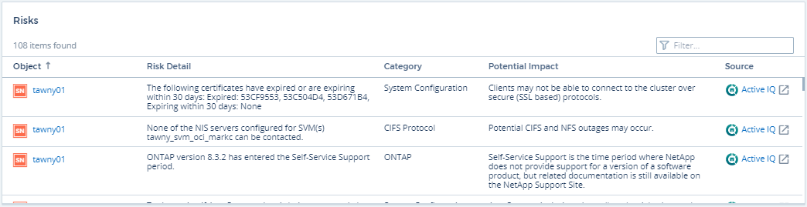
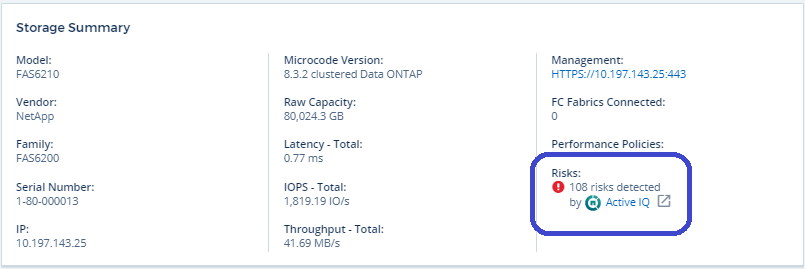
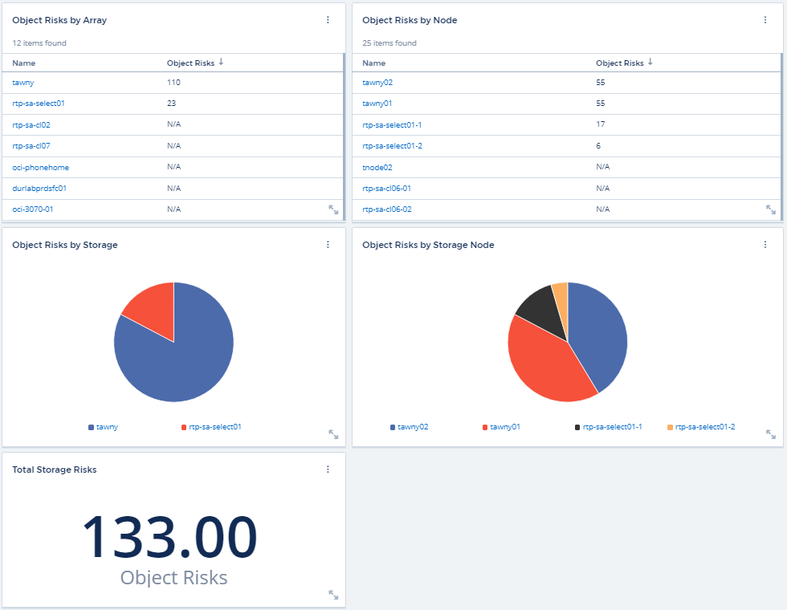

보안
보안
Active IQ
 변경 제안
변경 제안
넷엡 "Active IQ" 하드웨어/소프트웨어 시스템의 NetApp 고객에게 일련의 시각화, 분석 및 기타 지원 관련 서비스를 제공합니다. Active IQ에서 보고하는 데이터는 시스템 문제 해결을 개선하고 장치와 관련된 최적화 및 예측 분석에 대한 통찰력을 제공할 수 있습니다.

|
ActiveIQ는 Cloud Insights 연방판에서는 사용할 수 없습니다. |
Cloud Insights은 Active IQ에서 모니터링 및 보고하는 모든 NetApp clustered Data ONTAP 스토리지 시스템에 대해 * 위험 * 을 수집합니다. 스토리지 시스템에 대해 보고된 위험은 Cloud Insights이 해당 디바이스에서 데이터를 수집하는 과정에서 자동으로 수집합니다. Active IQ 위험 정보를 수집하려면 적절한 데이터 수집기를 Cloud Insights에 추가해야 합니다.
Cloud Insights는 Active IQ에서 모니터링 및 보고하지 않은 ONTAP 시스템에 대한 위험 데이터를 표시하지 않습니다.
보고된 위험은 _storage_and_storage node_asset 랜딩 페이지의 Cloud Insights에서 "위험" 표에 나와 있습니다. 이 표에는 위험 세부 정보, 위험 범주 및 잠재적 영향이 나와 있으며, 스토리지 노드의 모든 위험을 요약하는 Active IQ 페이지 링크가 제공됩니다(NetApp 지원 어카운트 로그인 필요).

보고된 위험의 수도 랜딩 페이지의 요약 위젯에 표시되며 해당 Active IQ 페이지에 대한 링크도 표시됩니다. storage_landing 페이지에서 count는 모든 기본 스토리지 노드의 위험을 합한 값입니다.

Active IQ 페이지를 엽니다
Active IQ 페이지에 대한 링크를 클릭할 때 현재 Active IQ 계정에 로그인되어 있지 않은 경우 다음 단계를 수행하여 스토리지 노드의 Active IQ 페이지를 표시해야 합니다.
-
Cloud Insights 요약 위젯 또는 위험 테이블에서 "Active IQ" 링크를 클릭합니다.
-
NetApp Support 계정에 로그인하십시오. Active IQ의 스토리지 노드 페이지로 직접 이동됩니다.
위험을 쿼리하는 중입니다
Cloud Insights에서 * monitoring.count * 열을 스토리지 또는 스토리지 노드 쿼리에 추가할 수 있습니다. 반환된 결과에 Active IQ가 모니터링된 스토리지 시스템이 포함된 경우 monitoring.count 열에 스토리지 시스템 또는 노드의 위험 수가 표시됩니다.
대시보드
위젯(예: 원형 차트, 표 위젯, 막대, 열, 분산형 플롯, 및 단일 가치 위젯)을 활용하여 Active IQ에서 모니터링하는 NetApp clustered Data ONTAP 시스템의 스토리지 및 스토리지 노드에 대한 오브젝트 위험을 시각화합니다. "오브젝트 위험"은 스토리지 또는 스토리지 노드가 초점의 개체인 이러한 위젯에서 열 또는 메트릭으로 선택할 수 있습니다.
